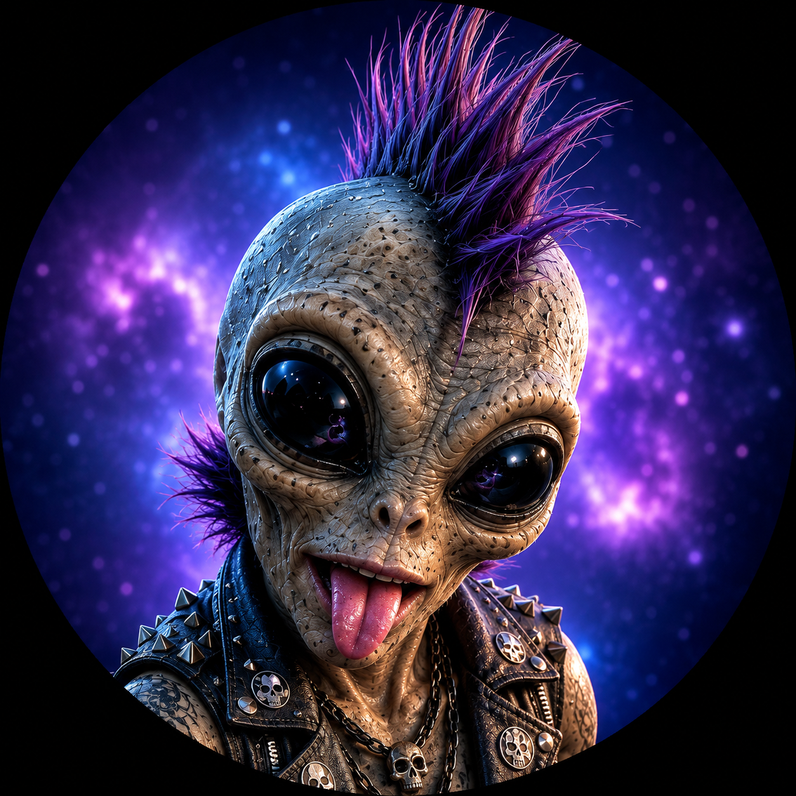

WAVD Token Teleporter
Definitely legitimate alien technology
SPECIMEN TKN-01DIRECT TRANSFER
Open a signed-in Suno page and beam its current session token directly into WAVD Desktop.
WAVD Desktop should be running. Clipboard fallback is standing by with duct tape.